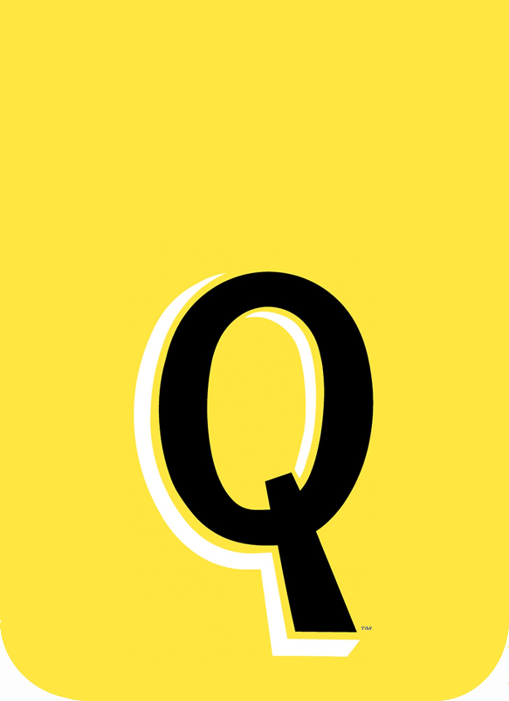

Real Estate
Industrial
BBX
CICX
GBX
GCX
NCX
VBX
Metropolitan Ave
Commercial
Be™•Brooklyn equine at Prospect Park Stable ↗
(opens in a new tab)
Industry
Manufacturing
Quadrozzi™Concrete Corp.
Materials
Quadro▪cem™
Quadro▪salt™
Transportation
Quadro▪trax™
Arts & Media
Quadrozzi™disegno, ink.
Quadrozzi™studios, inc.
Recreational
Be™•Brooklyn equine at Prospect Park Stable ↗
(opens in a new tab)
Not-for-profit
hhi™•helping hoof initiative •501(c)(3)
News
In the News
Sponsorships
“We don’t mean business, we make it.”
Contact us
la Famiglia
1st Generation
Costantino Quadrozzi (1898) ↗
(opens in a new tab)
2nd Generation
John Quadrozzi, Sr.
William Quadrozzi, Sr.
Patrick Quadrozzi
3rd Generation
John Quadrozzi, Jr.
4th Generation
Leonor Quadrozzi
…est 1954